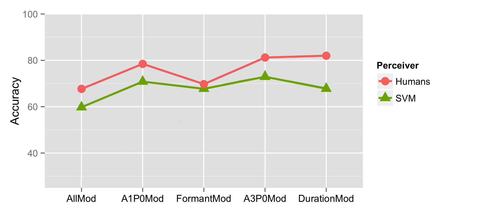
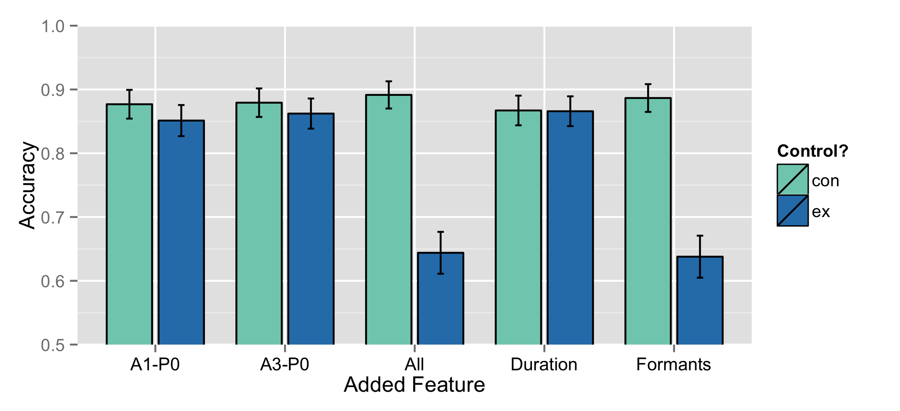
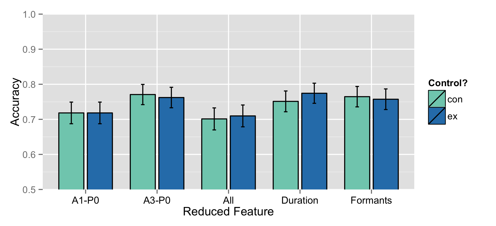

UC San Diego
Natural language text is complex
Speech is complex
It reflects and describes a complex world
… yet, somehow, we’re able to consistenly get relevant information from person to person using language
Some feature (or group of features) allows us to recover the difference between ..
Multiple phonemes
Different temporal orderings
Many possible social identities
Two closely related meanings
There are many possible features which could be signalling any given contrast
“I’m drowning in possible features that could signal what I’m studying.”
“How can we figure out which ones humans are actually using?”
15 years and a series of improbably large grants (to test them all with humans)
Educated guesswork to narrow the field
Conventional Statistical analysis
Machine Learning, then humans!
|
‘Cat’ [kæt] |
‘Can’t’ [kæ̃nt] |
|---|
Figure from Styler 2017
In a perfect world, you would test all possible features as potential cues
Some a priori choices must be made to reduce the feature space
… but every time you exclude a feature, you run the risk of excluding the feature
All spectral or temporal features in the signal
Some absolute, some relative
Features like…
Human responses aren’t very transparent
Subtle changes often produce subtle differences in response
Observations are not independent
Participants have different language and knowledge backgrounds
Participants have limited endurance
Running human experiments is… non-trivial
| ### The Basic Idea |
| Human speech perception is just classifying sounds based on acoustical features |
| * Computers can do that too! |
| * Give the acoustic feature information to a classifier and ask for oral vs. nasal judgements |
| * Greater accuracy means a feature or grouping is more useful and informative! |

Their decisions are easier to quantify than humans’
They’ll (often) tell you how they made the decision they did
They have no knowledge that you don’t give to them
They make all decisions independently
They don’t require payment or scheduling
They’re available 24/7
Select a large corpus of data, and manually assign each observation to a group
Training: Feed this labeled data into an algorithm so it can learn the patterns
Testing: Give the trained algorithm new data without labels, and check the accuracy of its classifications
Better accuracy often indicates more useful information was given to the classifier!
Recorded 12 English speakers making words with oral and nasal(ized) vowels
“Oral” vowels were in CVC contexts, and “Nasal” were in CVN/NVC/NVN contexts
This resulted in 3823 words
Then, I measured each of the 29 features at two timepoints per vowel
Then I handed them to a Support Vector Machine as training data
A very common, very accurate machine learning algorithm
Look at all the data in an multi-dimensional space
Try to find a line or hyperplane that optimally** separates the classes
Classification is just seeing where the new data is relative to that line
(There are other algorithms that can work well, too!)
Are any features good enough on their own to allow nasal perception?
29 separate models (one per feature) classifying datapoints as “oral” or “nasal”
Each model outputs accuracy figures, which we can compare!
F1’s Bandwidth is the most useful and informative feature
A1-P0, a measure of relative spectral prominence, gets second place
The worst feature performed at 51.23% accuracy
None of the features are good enough on their own!
SVMs with all features worked best (29 features)
Formant Frequency and Bandwidth, Spectral Tilt, A1-P0, and Vowel Duration was the best subgroup (5 features)
We only lose 2.5% accuracy when we reduce our feature set by 69%!
Formant Bandwidth was the most useful single feature for English (62.5% accuracy)
… and we’ve got a multi-feature grouping with very good accuracy (82.2% accuracy)!
So, let’s test those five features with actual humans!
English listeners can use vowel nasality to identify missing nasal consonants
Let’s add or remove features from vowels to see what indicates “nasality”!
If adding or removing a feature changes perception, or makes them react more slowly, it’s important!
Use signal processing to simulate the oral-to-nasal change (or vice versa) in…
Recruited 42 normal-hearing Native English speakers from a department subject pool
Each listened to 400 words with different modifications
Analyzed both confusion and reaction time associated with stimulus changes
bad |
ban |
|---|
bomb |
bob |
|---|
Only formant modification had a significant effect on perception
Formant modification caused listeners to respond more slowly
Formant modification made oral vowels sound “nasal”
F1’s bandwidth is probably the cue
The machine learning models predicted F1’s bandwidth as the most useful feature…
… and the humans agreed!
Let’s give the computer the same experimental task as the humans, using the same altered stimuli, and see how they compare!

Humans and machines did show similar patterns
Humans are still more accurate overall
SVMs predicted gradient usefulness of the features
SVMs showed greater accuracy when all features were available
So, SVMs can show relative informativeness of features
The SVM studies very effectively narrowed the field
The SVM studies and the humans both agreed on the best feature
Trained SVMs were able to perform the same experiment, with similar results
Modeling human language using machine learning is helpful!
Computational Linguistics loves it
Modeling gestural data to identify discrete gestures rather than interpolation
Modeling the time course of speech perception with machine learning
Neural networks for finding tongue shapes in ultrasound data (Jian Zhu, cf. ASA 2018)
Classifiying athletes as ‘white’ or ‘black’ based on media portrayal (Kelly Wright)
… and there are always more rich signals

The speakers and listeners who participated in the study
The great many electrons inconvenienced in the process of building these SVMs
The University of Colorado at Boulder and Dr. Rebecca Scarborough
The University of Michigan for the support and training, and the Michigan Phondi Group
Chen, M. Y. (1997). Acoustic correlates of english and french nasalized vowels. The Journal of the Acoustical Society of America, 102(4):2350–2370.
Hawkins, S. and Stevens, K. N. (1985b). Acoustic and perceptual correlates of the non-nasal–nasal distinction for vowels. The Journal of the Acoustical Society of America, 77(4):1560–1575.



Modifying formants (or all together) resulted in more confusion!
People called oral vowels “nasal” more often with modified formants
The pattern of the All-Modified stimuli was statistically similar.
 |
|---|
| ## Feature Reduction (Nasal-made-Oral) Findings |

Confusion wasn’t affected by modificaton for nasal-to-oral stimuli!
We never changed “nasal” to “oral” by modifying features
 |
| * Modifying formants (or all features) resulted in slower reaction times! |
| * People were slower to call vowels “oral” or “nasal” with modified formants |